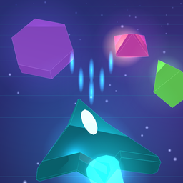

Neon arcade games for iPhone that play offline and are free, with optional ads.

An endless neon shooter. Steer with one finger and your ship fires by itself.
For help, feedback or privacy questions, email saroj.jena@gmail.com. Please include the game's name and your iPhone model, and I'll reply as soon as I can.
Only on your iPhone. There are no accounts. If you delete the game, your progress, gems and ships are deleted too, and they can't be restored.
No. The games play fully offline. Ads, and the rewards you get for watching them, need a connection. With no internet, the "Watch an ad" buttons are greyed out until you're back online.
Ads keep the games free, with no in-app purchases. Rewarded ads only play when you tap "Watch an ad". In Lumablast a short ad break plays between games, every 7 or 8 games, never during play.
On iPhone, go to Settings → Privacy & Security → Tracking and switch the game on or off. In the UK and EU you can also open the game's Settings → Ad privacy to change your consent choices. See the privacy policy for details.
The games follow your iPhone's silent switch. Turn silent mode off, and check Music and Sound effects are on in the game's Settings.